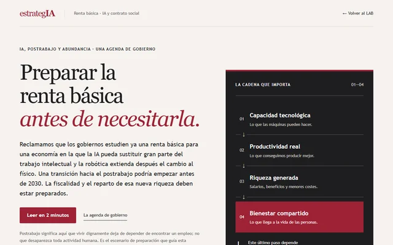

Preparar la transición
Renta básica en la era de la IA
Un monográfico para que los gobiernos estudien en serio cómo preparar los ingresos, la fiscalidad y la protección social ante una posible transición hacia el postrabajo. Explica la renta básica y sus alternativas, contrasta la evidencia de los pilotos y examina escenarios de IA, financiación y reparto de la riqueza. Incluye una calculadora ilustrativa, una agenda de gobierno y un dossier descargable.
Qué contiene y límites
Análisis editorial de estrategIA con fuentes de investigación y antecedentes de la newsletter. Los escenarios de AGI, ASI y postrabajo son hipótesis, no calendarios seguros. Los pilotos no reproducen una economía con mucho menos empleo y la calculadora utiliza un país hipotético. El dossier recoge el contenido de la web.